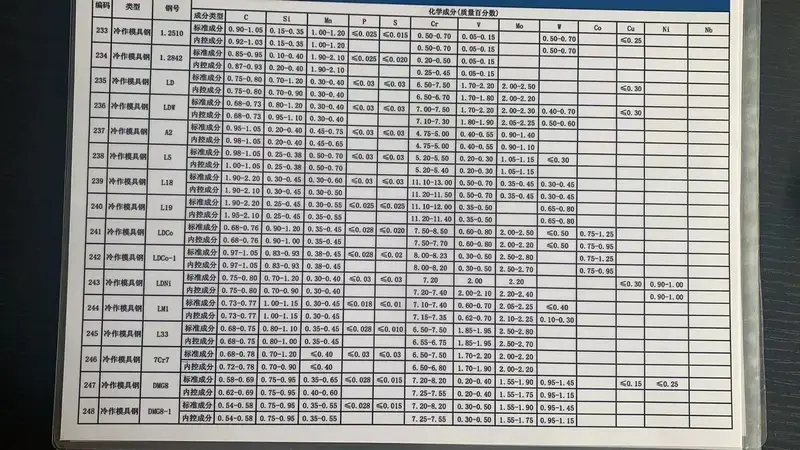
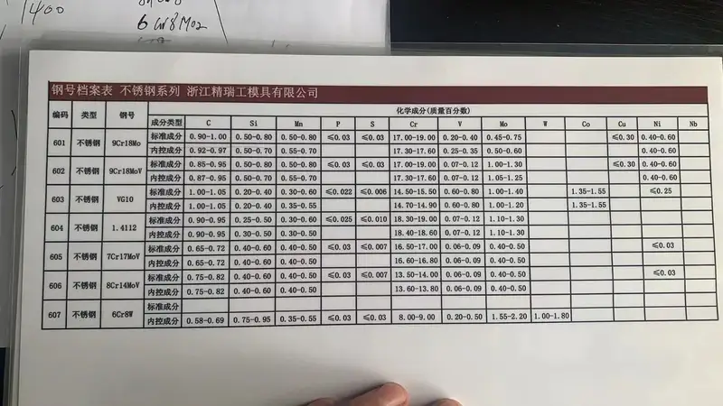

Maintenance Recommendations
建议每2000运行小时定期检查齿板磨损模式。当齿形高度减少原始高度的30%时更换。




| 型号 | 耐磨件 |
|---|---|
| 破碎原理 | Low-speed dual-roll sizing |
| 进料粒度 | Up to 1500mm |
| 产品粒度 | 25-250mm adjustable |
| 处理能力 | Up to 14,000 TPH |
ZG30CrMnMo合金铸钢（HRC 45-55，AKV 10-15J），可选ASTM A128 B-2高锰钢（HB 185-210）
DRS 660 S, DRS 1000 x 3000 C(B), DRS 500 x 1000 C(B)
齿板、破碎段、辊壳
蒂森克虏伯CenterSizer和RollSizer DRS系列可更换齿段；低速双辊破碎煤炭、盐和矿物
| Grade | C | Si | Mn | Cr | Mo |
|---|---|---|---|---|---|
| ZG30CrMnMo | 0.26-0.34 | 0.40-0.80 | 0.90-1.30 | 0.90-1.30 | 0.15-0.25 |
优化齿尖形状设计实现高效物料分级；煤炭和矿物应用中已验证的长寿命
RollSizer破碎段和辊壳；螺栓固定设计快速更换
| Grade | C | Si | Mn | Cr | Mo |
|---|---|---|---|---|---|
| ZG30CrMnMo | 0.25-0.35 | 0.3-0.6 | 0.8-1.2 | 0.8-1.2 | 0.15-0.30 |
高强度耐磨，适用于分级机齿板；验证成分，完整质检文档
| Grade | C | Si | Mn | Cr | Ni | Mo |
|---|---|---|---|---|---|---|
| ZG30CrNiMo | 0.25-0.35 | 0.3-0.6 | 0.7-1.1 | 0.8-1.2 | 1.0-1.5 | 0.15-0.30 |
镍添加提高韧性；重型分级机齿板理想选择，兼顾耐磨和抗冲击
建议每2000运行小时定期检查齿板磨损模式。当齿形高度减少原始高度的30%时更换。